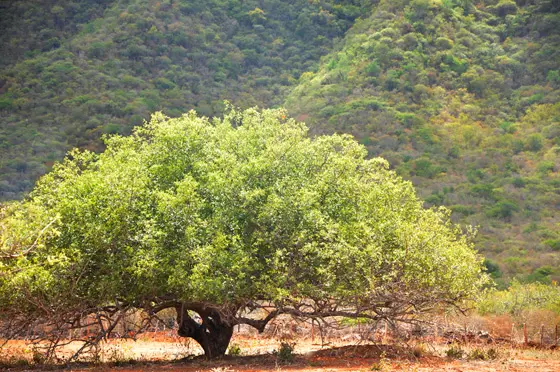

Intitulado por Euclides da Cunha como a “árvore sagrada do sertão”, o umbuzeiro é também conhecido como imbuzeiro (nome cientifico: Spondias tuberosa).
O seu fruto é o umbu ou imbu. A palavra que lhe deu esse nome é o “ymbu”, de origem tupi-guarani, que significa “árvore que dá de beber”, uma referência a sua característica de armazenamento de água, especialmente da raiz, qualidade necessária para sobrevivência nos longos períodos de seca no seu habitat natural, a Caatinga.
A planta pode alcançar sete metros, tem tronco curto e copa em forma de guarda-chuva. As flores são brancas, agrupadas, perfumadas, com néctar que é retirado pelas abelhas para se alimentarem e produzirem mel.
O fruto é pequeno e arredondado, de casca lisa ou com pequenos pelos, que lhe conferem uma textura levemente aveludada. Com cheiro doce e sabor agradável, levemente azedo, o umbu tem a coloração verde-amarelada.
Grande parte da sua composição é aquosa e possui consideráveis propriedades nutricionais, sendo rico em vitamina C. É muito apreciado para consumo humano in natura ou beneficiado, na produção de polpas de fruta, sorvete, geleias e doces. Vale salientar que o fruto maduro dura no máximo dois ou três dias, o que dificulta o consumo in natura. O fruto e a folha do umbuzeiro também são utilizados na alimentação animal.
Com sabor doce, e nascida de uma cactaceae, a pitaya possui fibras que não são digeridas pelo intestino humano, mas sim fermentada, o que aumenta a quantidade de boas bactérias que compõem a microbiota intestinal, e acaba por regular o desenvolvimento de más bactérias no corpo.
A fruta possui propriedades que diminuem a resistência à insulina, pois tem em suas capacidades o de regular os níveis de açúcares na corrente sanguínea, e auxilia em condições como a da pré diabetes e na prevenção do desenvolvimento da diabetes em si.
- Como a maioria das plantas na Caatinga, o umbuzeiro perde todas as suas folhas nos períodos de seca, mas volta a florescer assim que começam a cair as primeiras chuvas.
- A frutificação segue o mesmo percurso, estando os frutos maduros 60 dias após a abertura das flores.
- As raízes do umbuzeiro, em formato de batatas, podem ser utilizadas na culinária popular e apresentam um sabor adocicado.
- As populações tradicionais utilizam o suco da raiz nos casos de escorbuto, doença que tem como sintomas hemorragias nas gengivas em decorrência de carência grave de vitamina C.
- Em períodos de estiagem forte, a água armazenada nas raízes pode ser consumida por pessoas e animais
- Ainda se atribui a ela propriedades medicinais antidiarreicas.